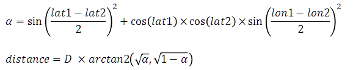

These exercises are designed to expand on the topics introduced in the Collections chapter of the Java Development training course.
You can attempt the exercises in any order but the later exercises tend to be more complex and require more time to complete. You are not expected to complete all the exercises in the time available. Just do as many as you can do, or want to do, and try to find time after the course has finished to return to complete these exercises. If you are unsure what to do, or need advice as you work through the exercises then please ask your instructor for additional information.
The purpose of these exercises is to ...
A UK lottery ticket entry requires 6 unique numbers between 1 and 59. Write a program to generate one row of random ticket numbers. Do this by:
Create an array initialised with the numbers 1 to 12 and use this as the source data to generate the classic multiplication tables. Use and iterative for loop and the format() function to print out the table so it looks like:
1 2 3 4 5 6 7 8 9 10 11 12
1 1 2 3 4 5 6 7 8 9 10 11 12
2 2 4 6 8 10 12 14 16 18 20 22 24
3 3 6 9 12 15 18 21 24 27 30 33 36
...
12 12 24 36 48 60 72 84 96 108 120 132 144
The Haversine Formula is used to calculate the great circle distance between two points on a sphere. The formula is evaluated as follows where lat1, lon1 and lat2, lon2 represent the latitude and longitude of two points (defined as radians) and D is the diameter of the Earth:
Write a function that calculates the distance between two locations each defined as an array of two doubles (double[]). Have the function return the distance in kilometres (Earth diameter is 12742km); you should use a class level private static final constant for the earth diameter.
Call your function to calculate the distance from Exeter (50.73, -3.54) to Heathrow (51.4775, -0.4614) expressed in km; you should get the result 222.06km. Pass in the values for the locations as anonymous arrays (use the syntax new double[]{ }).
Rock-paper-scissors is a zero sum hand game played between two people. To play, each player simultaneously forms one of three shapes with their hand:
The shapes are compared so that the winner is detrmined from:
In the event of a draw, the players select again and continue until a winner emerges or a player quits.
Implement your version of the game. Prompt the player for a move (accept either the first letter or full name of the move), generate a random computer move, compare the results and display the winner. If there is a draw then loop round and repeat until the user quits or a winner is found.
Use a decision matrix to compare the outcome of each game. That is create a 3x3 array and in each cell indicate the winner where the row is selected by the users choice and the column is selected by the computers choice. You will need to map rock, paper and scissors into the numbers 0, 1 and 2 (to index the collection).
Simulate the basic mechanism of a card playing game with a deck of decks and players who are each dealt a hard of cards from the deck. A card can be simulated using a number between 0 and 51. A card's face value will be the card number modulo (remainder) 13 and the suit will be the card number divided by 13 (rank the suits clubs 0, diamonds 1, hearts 2 and spades 3). The card deck and the player's hands will be simulated using ArrayList<Integer> objects.
There are a number of steps you will need to follow to develop this program:
private static final String SUITS = "CDHS"; private static final String VALUES = "A23456789TJQK";
Doyle : 4D AD AD 3S 3H Bill : AC 3S 2D 2D 2C Henry : AH 3S 3D 2H 3H Deck : 2S 3C 4S AD 4D 2C 2S 4C ...